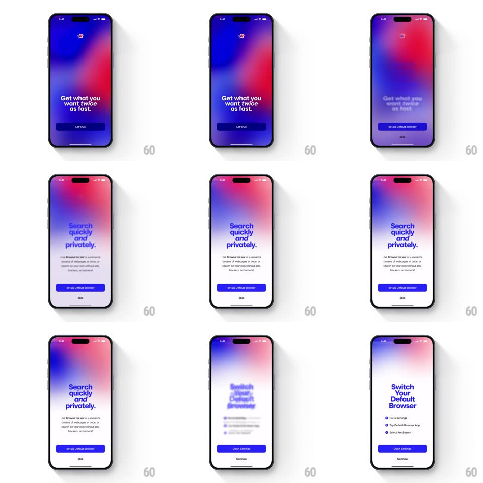

Media
Frame-by-frame

Rebuild this interaction 1:1: Arc Search's onboarding - tapping "Let's Go" morphs the full-bleed gradient from blue-purple to red-pink while "Get what you want twice as fast." staggers out and "Search quickly and privately." staggers in, the button morphing into "Set as Default Browser".

Rebuild this interaction 1:1: Arc Search's onboarding - tapping "Let's Go" morphs the full-bleed gradient from blue-purple to red-pink while "Get what you want twice as fast." staggers out and "Search quickly and privately." staggers in, the button morphing into "Set as Default Browser".
## Integration
Integration: stack-agnostic spec - springs given as stiffness/damping, timed motions as duration + curve; map every value to your framework and animation library of choice.
## Scene
Full-screen mesh gradient (blue, purple, red blobs) with a small star logo top-center, a big bold headline lower-left, and a dark pill button. Step two: the gradient turns red-pink, headline "Search quickly and privately." with a subline ("Use Browse for Me to summarize..."), a blue "Set as Default Browser" button, and "Skip".
## Motion spec
Pattern: gradient-morph step transition, ~700ms.
- Tap: the button's label crossfades (150ms) as its fill morphs dark -> blue (250ms).
- Gradient: the mesh blobs drift and re-hue continuously (blue-purple -> red-pink over 600ms, ease-in-out), always in motion (idle drift 20s loop).
- Text: the old headline blurs and sinks 12px out (250ms); the new one rises 12px in de-blurring word by word (60ms stagger, 300ms); the subline fades in +150ms.
- Reversal: Skip uses the same transition toward the next step; "Open Settings" morphs the button again (label + width, 250ms).
## Calibration
- The gradient never stops moving, even mid-transition.
- The button's width animates with the label change - no layout jump.
## Reduced motion
Gradient crossfades hues (400ms) without drift; text crossfades without blur.
## Don't miss
- Text leaves through blur, not just fade - the de-blur on entry is the signature.
- Logo stays pinned through every step.